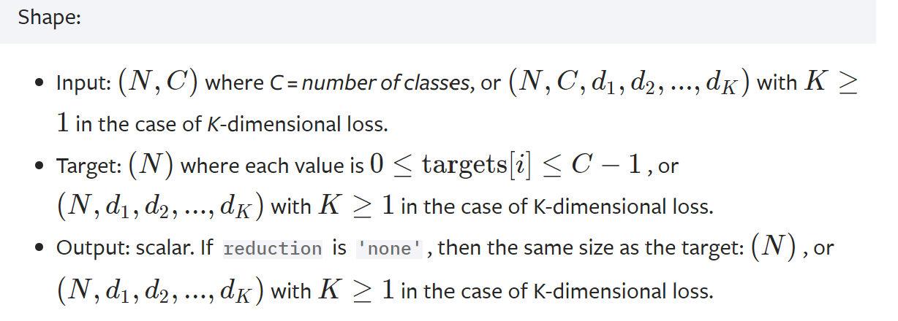
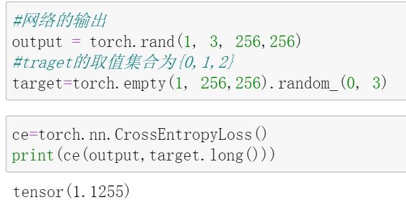
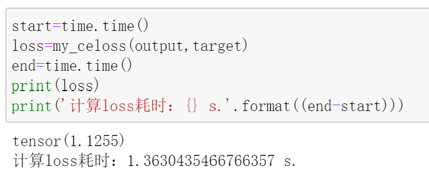
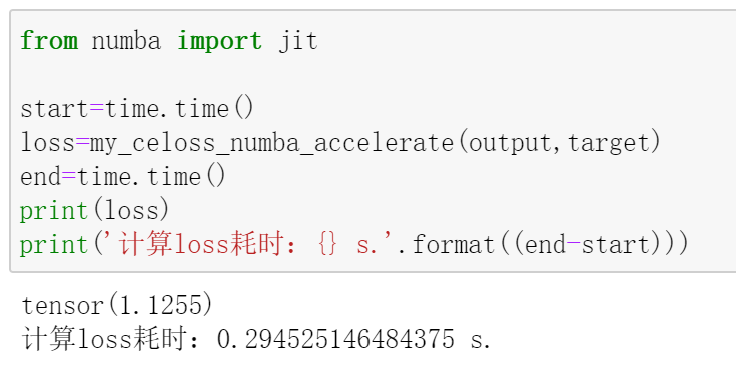
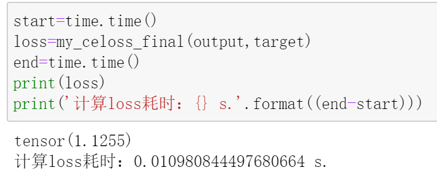
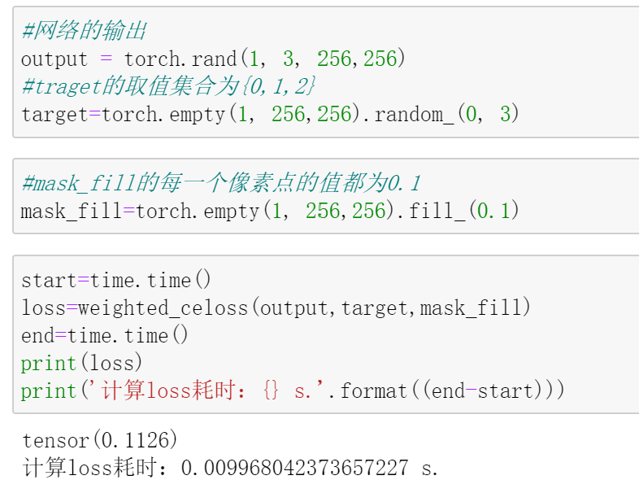

在之前的这篇文章中，我们介绍了PyTorch中的交叉熵损失函数的具体使用方法（传送门），并举了大量的栗子进行解释。
在此基础上，就可以尝试对交叉熵进行魔改啦~
CrossEntropyLoss到底做了什么？
吃瓜群众：那说一下魔改的具体内容呗…
别着急，在开始魔改之前，需要花些篇幅介绍下在PyTorch中的CrossEntropyLoss内部所做的事情。

这是官方给出的关于CrossEntropyLoss的维度说明。简而言之，分为两种情况：
- 网络的输出shape为
[N,C]，对应的真实类别标签维度就得是[N]； - 网络的输出shape为
[N,C,d1,d2,...]，对应的真实类别标签维度就得是[N,d1,d2,...]；
对于第一种情况，我们在这篇文章（传送门）的最后已经讲过，本文将以第二种形式的数据进行举例说明。
来看一下贯穿本文的一个栗子：
假设网络的输出
output的shape为[1,3,256,256]，其中1代表batchsize，3代表这是个三分类问题，后面的两个256可以看作是一张256*256的图片的高(height)和宽(width)，也就是说，总共有256*256个像素点。用代码随机生成output，如下：
2
output = torch.rand(1, 3, 256,256)该输出对应的已知
target的shape为[1,256,256]，其中4代表batchsize，后面的两个256也可以看作是一张256*256的图片的高(height)和宽(width)，和网络的输出不同的是，这里每一个像素点的取值集合是${0,1,2}$，因为它们代表的是该像素点所属类别。用代码随机生成target，如下：
2
target=torch.empty(1, 256,256).random_(0, 3)
如果使用PyTorch封装好的CrossEntropyLoss，可以直接得到它们之间的交叉熵：

现在问题来了：CrossEntropyLoss内部究竟做了些什么呢？
如果不能回答这个问题，我们就无法尝试自己用代码写出一个交叉熵函数，而这正是对交叉熵进行魔改的前提！
现在给出答案：
1）对网络的输出output在类别维度上做softmax操作，然后对结果再取log ，得到logsoftmax；
2）现在得到了logsoftmax，又已知每个样本的类别标签target，于是将target作为下标索引index，在logsoftmax的类比维度(也就是上一步做softmax的维度)上进行索引，得到每个样本对应的索引值value；
3）将每个样本的value加起来求个平均值，再取个负号，就计算出了交叉熵。
为了进行说明，先把之前写过的交叉熵的计算公式搬过来：
$$L=-{\frac1N} {\sum_{i=1}^{N}} {\sum_{c=1}^{K}} y_{ic}log(p_{ic})$$
第(1)步比较容易理解，在类比维度上做softmax是为了将网络预测的类别向量转为概率分布，之后再取log，将预测值的取值范围由$[0,1]$映射到$[-\inf,0]$ ，这对应着交叉熵计算公式中的$log(p_{ic})$;
第(2)步看起来有点奇怪，其实是在简化运算。我们知道，在交叉熵的计算公式中，$y_{ic}$其实是onehot形式的，如果直接求解$y_{ic}log(p_{ic})$，会有大量的$0$出现，这些计算其实是没必要的，我们只需要获取$y_{ic}$中取值为1的元素对应位置的$log(p_{ic})$即可。也就是说，我们可以将对于${\sum_{c=1}^{K}} y_{ic}log(p_{ic})$的计算简化为对于$y_{ic’}log(p_{ic’})$的计算，其中$c’$是第i个样本的真实类标签。
第(3)步也很容易理解，正对应公式中的$-\frac1N\sum_{i=1}^{N}$ 。
了解了这些，就可以根据这三步实现自己的交叉熵了~
吃瓜群众：期待…
交叉熵1.0版本
根据之前的这三个步骤，交叉熵实现如下：
1 | def my_celoss(output,target): |
我们可以测试一下：

计算结果和我们之前调用CrossEntropyLoss计算的结果一模一样。
吃瓜群众：既然已经实现了，那就准备做魔改吧，快说一下魔改的具体内容…
等等，还有一个问题，这种实现方式计算loss的速度有点慢啊！别看只有1.36秒，假设共10000个样本，batchsize为1，不考虑其他因素，每迭代一个epoch，光计算loss就需要约13600秒，即3.78个小时。
所以，目前知识理论上实现了交叉熵，但实际上是无法投入使用的。
吃瓜群众：那怎么办？
交叉熵2.0版本
既然速度慢，那就找点加速的方法~
经过与搜索引擎的一番友好互动，我发现了numba，据说可以加速。
那就安装下：
1 | pip install numba |
具体使用时，只需从numba中导入jit，并在要加速的函数（方法）前面加一行@jit即可：
1 | from numba import jit |
需要注意的是，目前的numba只支持对于原生的Python语法以及部分numpy的加速，所以，并不能直接在之前实现的my_celoss函数之前加一句@jit。
不过也能解决，只需将需要被加速的部分单独拿出来写成一个函数就可以了。在my_celoss中，大部分时间都花在那3个for循环中，所以可以将它们单独写成一个函数。最终实现的代码如下：
1 | def my_celoss_numba_accelerate(output,target): |
测试一下：

果然快了很多！
吃瓜群众：厉害啦！终于可以开始魔改啦！
好像，，，等等！
吃瓜群众：啥？还要等？
这种写法虽然能够加速，但是，我们已知忽略了一点，那就是，参与运算的不是PyTorch的tensor，这些是不能够被自动求导机制进行求导的，从而无法进行反向传播更新参数。而且，说实话，这加速后的速度还是有点不能接受。
吃瓜群众：额。。。
交叉熵3.0版本
事到如今，必须从根本上对my_celoss进行更改了。
之所以速度慢，是因为嵌套的for循环。那么，我们可不可以摒弃for循环的写法，换成另一种方式呢？
对的，我们可以充分利用PyTorch内置函数，这些函数和numpy中的函数都是经过底层优化的，因此运行速度很快，而且可以天然的使用PyTorch自动求导机制进行求导并实现反向传播更新参数。
代码实现如下，每一步的作用都写在代码注释中了：
1 | def my_celoss_final(output,target): |
现在来测试一下：

嗯，结果一样，而且速度提升明显。
吃瓜群众：哇！现在应该可以了吧，不会还要等吧？不会吧不会吧
不用再等了，现在可以来魔改交叉熵了~
加权的交叉熵
还是基于我们一直在用的栗子进行操作。
在原始的交叉熵中，每个像素点在总loss中的贡献都是一样的，而现在，我们希望打破这一状态，具体来说，希望给每个像素点设置一个权重，权重越大，那么该像素点对于总loss的贡献也就越大，反之则越小。
有了上面那么长的篇幅做铺垫，实现这一魔改操作就很容易了。
我们只需准备一个和targetshape一致的tensor，比如这里就是[1,256,256]的tensor，然后将tensor中的256*256个像素点的取值作为target中每个像素点的权重。
最后，将这个tesnor与所有像素点经索引得到的pred做个逐点乘积即可。
现在，上代码：
1 | def weighted_celoss(output,target,mask_fill): |
在之前实现的原始交叉熵代码的基础上，我们只改动了两个地方：
其一，函数多了一个mask_fill参数，它就是我们上面说的用于保存每个像素点权重的tensor；
其二，加了这句代码: pred=pred*mask_fill，它通过点乘实现了对每个像素点的加权。
现在来测试一下：

这里，我们将mask_fill的每一个像素值都设置为0.1，是为了方便验证，具体地，之前看到不加权的loss输出结果为1.1255，而这里加权后的输出为0.1126，舍去计算带来的误差，两者正好是0.1倍的关系，从而证明了以上代码的有效性。
至于在具体使用时，需要根据不同的情况，对mask_fill中的每个像素点设置对应的值作为权重。
下一次，我会结合自己的魔改经历，介绍这种加权交叉熵在实际问题中的应用，其中的核心就是mask_fill的制作过程。


- 本文链接：http://yoursite.com/2021/05/01/%E9%AD%94%E6%94%B9%E4%BA%A4%E5%8F%89%E7%86%B5/
- 版权声明：本博客所有文章除特别声明外，均默认采用 许可协议。